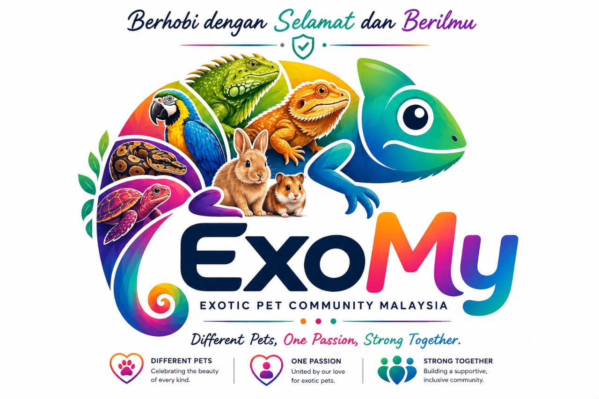

ExoMy is a Malaysian exotic pet community built to unite hobbyists, keepers, breeders, rescuers, educators, and animal lovers from all backgrounds under one passion: responsible exotic pet keeping.
Founded with the spirit of education, awareness, ethics, and community growth, ExoMy promotes a safer and more knowledgeable hobby culture in Malaysia. From reptiles and amphibians to birds, arachnids, mammals, aquatic species, and invertebrates, ExoMy celebrates the incredible diversity of exotic animals while emphasizing proper care, welfare, legality, and responsible ownership.
ExoMy is not just a hobby page. It is a growing movement focused on:
Sharing verified care guides, species information, handling knowledge, husbandry standards, and awareness content for beginners and experienced keepers alike.
Connecting Malaysian exotic pet enthusiasts through positivity, support, inclusiveness, and shared passion.
Encouraging ethical keeping, legal awareness, animal welfare, conservation respect, and safe hobby practices.
Producing detailed educational posters and verified species series to reduce misinformation in the exotic pet hobby.
Highlighting local species, local laws, local community culture, and the Malaysian exotic pet scene.
Building one of the strongest and most respected exotic pet communities in Malaysia through knowledge, creativity, and unity.
To inspire Malaysians to enjoy the exotic pet hobby with knowledge, compassion, responsibility, and respect for both animals and the community.
ExoMy believes that education creates better keepers, stronger communities, and healthier animals.
Different Pets, One Passion, Strong Together.
No matter the species, we are united by our love for exotic animals and our commitment to responsible keeping.